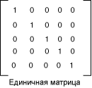

Практическое руководство. Использование матрицы цветов для преобразования отдельного цвета
GDI+ предоставляет Image и Bitmap классы для хранения и управления изображениями. Image и Bitmap объекты хранят цвет каждого пикселя как 32-разрядное число: 8 бит на красный, зеленый, синий и альфа-канала. Каждый из четырех компонентов является число от 0 до 255, где 0 соответствует нулевой интенсивности, а 255 — наибольшей интенсивности. Альфа-компонент определяет прозрачность цвета: 0 является полностью прозрачным, а 255 — полностью непрозрачный.
Цветовой вектор является кортежем в форме (красный, зеленый, синий, альфа-версия). Например вектор цвет (0, 255, 0, 255) представляет непрозрачный цвет, который не имеет красный и синий, а зеленый полная насыщенность.
Другой способ представления цветов использует номер 1 для полной насыщенности. При использовании цвета, описанные в предыдущем абзаце будут представлены в вектор (0, 1, 0, 1). GDI+ использует соглашение 1 как полной насыщенности, при преобразовании цветов.
Линейные преобразования (поворот, масштабирование и т. п) можно применить в векторы цвета, умножив эти векторы матрицу 4 × 4. Тем не менее нельзя использовать матрицу 4 × 4, для выполнения преобразования (нелинейной). Если добавить фиктивную пятую координату (например, номер 1) к каждому из цветовых векторов, можно использовать матрицу 5 × 5 для применения любое сочетание линейными преобразованиями и переводы. Преобразование, состоящее из линейного преобразования, а затем перевод называется аффинные преобразования.
Например предположим, что вы хотите начать с цветом (0,2, 0,0, 0,4, 1,0) и применить следующие преобразования:
Double красного компонента
Добавить 0,2 к компонентам красного, зеленого и синего
Следующие Перемножение матриц выполнит эти два преобразования в указанном порядке.

Элементы матрицы цветов индексируются (начинающийся с нуля), строк и столбцов. Например запись в пятой строке и третьем столбце матрицы M обозначается M [4] [2].
5 × 5 единичной матрицей (показано на следующем рисунке) имеет единицы на диагонали и размерностью. При умножении вектора на единичную матрицу, цвет не изменяется. Начать с единичной матрицы и внесите небольшое изменение, которое формирует нужные преобразования — удобный способ создания матрицы преобразования цветов.

Более подробное описание матрицы и преобразований, см. в разделе системы координат и преобразования.
Пример
В следующем примере выполняются образ, который был только один цвет (0,2, 0,0, 0,4, 1.0) и применяется преобразование, описанное выше.
Ниже показан исходное изображение в левой части и преобразованные изображения справа.

В следующем примере код выполняет указанные ниже действия для выполнения гамме:
Инициализировать ColorMatrix объекта.
Создание ImageAttributes и передать ColorMatrix объект SetColorMatrix метод ImageAttributes объекта.
Передайте ImageAttributes объект DrawImage метод Graphics объекта.
Image image = new Bitmap("InputColor.bmp");
ImageAttributes imageAttributes = new ImageAttributes();
int width = image.Width;
int height = image.Height;
float[][] colorMatrixElements = {
new float[] {2, 0, 0, 0, 0}, // red scaling factor of 2
new float[] {0, 1, 0, 0, 0}, // green scaling factor of 1
new float[] {0, 0, 1, 0, 0}, // blue scaling factor of 1
new float[] {0, 0, 0, 1, 0}, // alpha scaling factor of 1
new float[] {.2f, .2f, .2f, 0, 1}}; // three translations of 0.2
ColorMatrix colorMatrix = new ColorMatrix(colorMatrixElements);
imageAttributes.SetColorMatrix(
colorMatrix,
ColorMatrixFlag.Default,
ColorAdjustType.Bitmap);
e.Graphics.DrawImage(image, 10, 10);
e.Graphics.DrawImage(
image,
new Rectangle(120, 10, width, height), // destination rectangle
0, 0, // upper-left corner of source rectangle
width, // width of source rectangle
height, // height of source rectangle
GraphicsUnit.Pixel,
imageAttributes);
Warning
It looks like the sample you are looking for does not exist.
Компиляция кода
Предыдущий пример предназначен для работы с Windows Forms и требует PaintEventArgs e, который является параметром Paint обработчик событий.